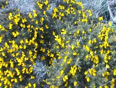
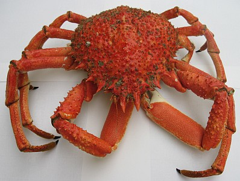

Abbaye de La Lucerne,
Nouormandie.
Lé 19 juilet, 1969.
Moussieu l'Rédacteu,
Quand j'sis en Jèrri dans l'êté et qué j'vai un tas d'geon, auve ses belles pétites jaunes flieurs, j'mé d'mande s'i' n'y a pon mouoyen dé l'faithe sèrvi pour tchiquechose utile. Quand j'tais mousse, nou-s-en fonnait ès j'vaux à mangi, et j'm'èrsouveins qu'j'avais tréjous peux tch'i' s'en allaient lus créver l'estonma atout les pitchets! J'viyais les fermièrs passer l'geon dans eune machinne appelée "chaff-cutter" en Angliais. J'n'ai janmais ouï un nom Jèrriais pour chutte machinne-là, mais j'pense qué ch'est un "hache-paille" en Français. J'ouiyais les gens prononcer ch'la "tchèrffe-cotteur". Les j'vaux pathaîssaient l'aimer, lé geon copé d'mème en p'tits morcieaux, et quand il' 'taient à l'mangi, nou viyait eune vèrte breue lus d'goutter d'la bouoche. Les pitchets n'pathaîssaient pon lus faithe dé ma. Ch'tait p't êt' viyant qué ch'tait du janne geon tch'i' fallait lus donner, et qu'les pitchets 'taient p't êt' pûtôt mos.
Siez ma grand'grand'méthe au Ménage ès Feuvres, j'l'ai veue bein des fais faithe sèrvi du geon pour cauffer l'grand fou pour fouangnier. Il en fallait trais dgèrbes, à un pitchet ou deux d'près, pour lé cauffer. Y'en avait tréjous eune quantité déhouors en drièthe dé la maiethon dans l'êté et, dans l'hiver, m'n oncl'ye Charles lé gardait dans la p'tite êtabl'ye à côté du pits pour le garder sé.
Ch'tait d'tchi mangnifique pour lé cauffer, l'fou, car v'la tchi brûlait si bein quand il 'tait sé. Il éthait brûlé bein dans la grande âtre étout, sans doute, mais y'avait tréjous tout pliein dé p'tit bouais d'amain. Nou n'avait qu'à l'ramâsser au pliein sus la grève à L'Êta. Y'avait tout pliein d'couêpieaux à brûler dans l'âtre étout, et i' n'couôtaient rein. I' n'y avait qu'à les ramâsser dans les clios où'est tch'i' y'avait d'la pâtuthe pour les vaques et j'ai aîdgi à Manman à en ramâsser bein des fais. Sans doute y'avait d'l'êpilage brûlé dans l's âtres étout, et du vrai sé, mais i' n'y avait pon fort dé bouais au Ménage pour aver d'l'êpilage, et y'avait pus bésoin d'vrai sus la tèrre qué dans l'âtre!
Il 'tait c'mode pour bein des choses, lé geon, dans les vièrs temps. Papa m'dîsait tch'il' en m'ttaient l'tou des jannes pommièrs pour ameublyi la tèrre, mais comme les gardîns à pommièrs c'menchaient dêjà à dispathaître quand j'tais mousse pour faithe du run pour craître des patates, j'n'ai janmais veu d'jannes pommièrs pliantés.
Eune drôle d'expression d's anciens - ch'est à dithe qué j'la trouvais drôle quand j'la ouiyais quand j'tais mousse - 'tait tch'i' dîsaient qué l'geon 'tait "en barbe" pour dithe tch'il 'tait flieuthi! Comme Papa et m'n oncl'ye Charles, et quâsi touos l's hommes d'eune cèrtaine âge, avaient d'la barbe, jé n'pouvais pon comprendre comment qu'des flieurs pouvaient êt' appelées d'la barbe! La preunmié fais qué j'ouis ch't expression-là 'tait quand un Mess Le Hutchet, d'St. Martîn, tch'avait 'té naviguant auve Papa dans sa janne temps, vînt l'vaie à la forge un jour et tch'i' lî dît: "L'geon est en barbe, par ichîn!" L'pouorre papa eut d'la peine à m'faithe comprendre, eune fais qu'Mess Le Hutchet fut hors, comment qu'du geon pouvait aver d'la barbe!
Appathemment, l'geon a 'té d'utilité sus bein des sens, aussi bein dans la vie d'la jannèche comme des grand' pèrsonnes. Lé fanmeux dictionnaithe Jèrriais d'l'Académicien L'Maistre nouos dit qué, l'temps passé, les mousses jouaient "à dêréchinner l'geon". J'n'en ai janmais ouï pâler lé-mème, mème dans mes p'tits jours, et comme Papa n'm'en pâlit janmais dans san vivant (i' mouothit en 1903), j'pense bein tch'i' n'y avait pon joué li-mème et qué l'jeu avait dêjà 'té oublyiyé dans san temps. Y'a-t-i' tchitchun en vie à St. Ouën au jour d'aniet tch'en a connaîssance? I' fallait qué ch'fûsse un jeu dé touos vièrs temps, dépis qué l'Sieur Le Maistre nouos dit qu'les Sèrtchais l'connaîssaient étout, et tch'il' 'taient St. Ouënnais tchiques chents ans dévant qu'êt' Sèrtchiais!

Lé geon a la distînction d'aver trouvé sa pliaiche parmi les ditons d'l'Île étout. Y'en a iun tchi nouos dit qué quand l'geon donne eune abondance dé flieurs au r'nouvé, ch'est sîngne d'eune bouanne année à pihangne! Mais, comme vouos l'dit Moussieu L'Maistre dans l'dictionnaithe, i' pathaît y'aver la mème abondance dé flieurs sus l'geon châ èrnouvé! Et j'ai dêcouvert ches dreines années tch'i' n'y a pon tréjous eune abondance dé pihangnes!
Eune chose tch'est bein cèrtaine est tch'il est pliein d'pitchets, l'geon, et qué, ouaithe qué les j'vaux lus en rigalaient l'temps passé sans s'faithe dé ma, un mousse tch'avait l'malheu d'tchaie d'ssus prannait bouan soin dé n'lé r'faithe pon eune deuxième fais! En r'vénant d'jouer l'tou du Châté d'Gros Nez eune fais auve deux-s'trais aut' mousses, deux d'ieux c'menchîdrent à lus entr-battre. La bastaude n'avait duthé qu'deux-s'trais p'tits co-d'poings quand iun des deux tchulbutit à la renvèrque dans eune touffe dé geon! Il avait pus d'chînquante ans quand j'lé r'vis en 1946, et i' m'dit tch'i' halait acouo un pitchet d'temps an temps dé là où'est qu'nou s'assied!
George d'La Forge
Viyiz étout:
{kind=link}